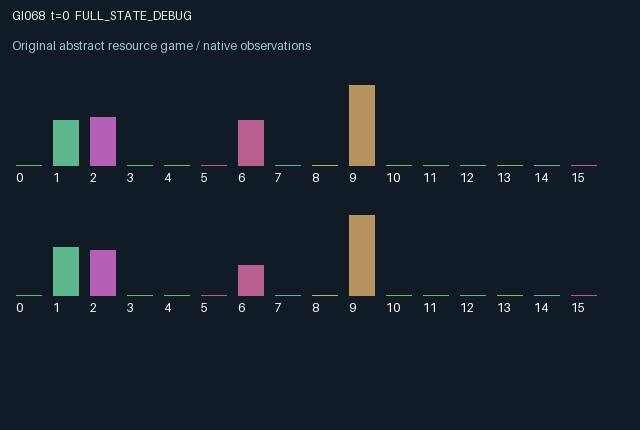

GI068 / LEGACY_ARRAY
astra-d2-00068: Delayed underwriting with optional information purchase
2 agents5 actions16 observation columns32 original horizonRuntime: PASS
Release verification episode
Untrained uniform legal actions. Actual JAX state sampled along the full original episode; full-state debug camera. No human performance or learning claim.

Run this game
crucibles play --game 68
Start Python locally, then open the address printed by the terminal. Installation, multiplayer, takeover and keyboard controls →
Objective, rewards & ending
Exact task contract
{
"objective": "Accumulate original per-agent rewards under the interaction rules in mechanism.md.",
"natural_termination": "No early terminal; original t >= 32 horizon.",
"exact_transition_and_reward_source": "def raw_step(self, key, state, actions):\n active = state['timer'] > 0\n start = (actions == 1) & (~active) & (state['cash'] >= 0.25)\n issue = (actions == 2) & active[::-1] & (state['cover'][::-1] < 0.01) & (state['cash'] >= 0.15)\n liquidate = (actions == 3) & active\n audit = (actions == 4) & active[::-1] & (state['cash'] >= 0.025)\n mature = (state['timer'] == 1) & (~liquidate)\n ended = mature | liquidate\n funded_cover = state['cover'] + 0.15 * issue[::-1].astype(jnp.float32)\n success = mature & (state['quality'] >= 0.35)\n failure = mature & (~success)\n proceeds = 0.75 * state['quality'] * success.astype(jnp.float32)\n indemnity = funded_cover * failure.astype(jnp.float32)\n liquidation_cash = 0.12 * liquidate.astype(jnp.float32)\n cover_return = (funded_cover * (success | liquidate).astype(jnp.float32))[::-1]\n underwriting_fee = (0.04 * (success & (funded_cover > 0.0)).astype(jnp.float32))[::-1]\n investment = 0.25 * start.astype(jnp.float32)\n cover_cost = 0.15 * issue.astype(jnp.float32)\n audit_cost = 0.025 * audit.astype(jnp.float32)\n saving = 0.08 * (actions == 0).astype(jnp.float32)\n net_receipt = proceeds + indemnity + liquidation_cash + cover_return + underwriting_fee - investment - cover_cost - audit_cost\n cash = jnp.clip(state['cash'] + saving + net_receipt, 0.0, 1.0)\n timer = jnp.where(start, 3, jnp.where(ended, 0, jnp.maximum(state['timer'] - 1, 0))).astype(jnp.int32)\n quality = jnp.where(start, state['quote'], jnp.where(ended, 0.0, state['quality']))\n quote_draw = 0.10 + 0.90 * jax.random.uniform(key, (2,), dtype=jnp.float32)\n quote = jnp.where(start, quote_draw, state['quote'])\n cover = jnp.where(ended, 0.0, funded_cover)\n stale_audit = ended[::-1] | start[::-1]\n remembered = jnp.where(stale_audit, -1.0, state['audit'])\n audit_value = jnp.where(audit & (~ended[::-1]), state['quality'][::-1], remembered)\n event = success.astype(jnp.float32) - failure.astype(jnp.float32) - 0.5 * liquidate.astype(jnp.float32)\n next_state = {\n 't': state['t'] + jnp.array(1, dtype=jnp.int32),\n 'cash': cash.astype(jnp.float32),\n 'timer': timer,\n 'quality': quality.astype(jnp.float32),\n 'quote': quote.astype(jnp.float32),\n 'cover': cover.astype(jnp.float32),\n 'audit': audit_value.astype(jnp.float32),\n 'event': event.astype(jnp.float32),\n 'last_action': actions.astype(jnp.int32),\n }\n rewards = jnp.tanh(2.0 * net_receipt).astype(jnp.float32)\n done_all = next_state['t'] >= 32\n dones = jnp.full((2,), done_all, dtype=jnp.bool_)\n info = {'done_all': done_all, 'legal_mask': self.legal_actions(next_state)}\n return self.observe(next_state), next_state, rewards, dones, info"
}Declared per-step reward bounds: -1.0 to 1.0. Observability: source_defined.
Rules
Original mechanism document (historical status wording retained)
# astra-d2-00068: Delayed underwriting with optional information purchase This parentless source proposes reciprocal underwriting of independently initiated projects. It uses generic investment, insurance and costly-information mechanisms. No parent source or benchmark was supplied or inspected, and no novelty or nonisomorphism claim is made. Each agent owns liquid cash and a privately observed prospective project quality. Actions are 0 save, 1 initiate a project, 2 insure the partner's existing project, 3 liquidate one's own project, and 4 audit the partner. All five actions are legal; unmet prerequisites produce the corresponding no-op. Starting spends 0.25 cash and fixes the current private quote as quality. The project has a three-transition countdown, then pays 0.75 times quality if quality is at least 0.35. A failed uninsured project pays nothing. Initiation also draws the owner's next prospective quote using the supplied key. Insurance spends 0.15 of the underwriter's cash and attaches that amount to the partner's current project. It can be issued on the maturity transition. At failure the project owner receives the coverage and the underwriter loses it. At success the underwriter receives its capital and a 0.04 fee; the owner still receives the full project payoff. Liquidation pays the owner 0.12 and refunds any coverage to the underwriter, without a fee. Hence one agent's financing, liquidation and information decisions change persistent balances and the other's later receipts. Existing coverage prevents a second policy on that project. An audit costs 0.025 and reveals the partner's quality only while that project remains active after the transition. The remembered disclosure is cleared when the partner starts or ends a project. Cash, project countdowns, coverage, actions and completed outcomes are public. Own project quality, own next quote and one's own remembered audit are directly observed; the other's quality and prospective quote are not direct observation columns. Public cash and outcomes may nevertheless reveal information indirectly. The 16 observation columns, in order, are normalized clock; own/other cash; own/other countdown; own current quality; own next quote; own/other coverage; remembered partner quality or -1; own/other event code; own/other previous action; audit-known indicator; own active-project indicator. All arrays start from an explicit float32 zero observation matrix. Saving adds 0.08 cash but no direct utility. Per-step utility is actual project, indemnity, liquidation, capital-refund and fee receipts minus initiation, insurance and audit expenditure. Reward is tanh(2 times utility), bounded within [-1, 1]. Cash is clipped to [0, 1]; reward uses the pre-clipping receipt, so additional receipts at the cash ceiling still earn reward. Payments occur before finite-horizon termination; unfinished projects at step 32 remain unfinished in the preserved terminal state. This is an unvalidated authored proposal. Syntax parsing alone, if performed, does not establish compilation, operational mechanism qualification, pool eligibility, duplicate status or learning effectiveness. Those determinations remain with the isolated experimenter workflow.
Commands
0Save
1Start project
2Insure partner project
3Liquidate project
4Audit partner project
Roles & abilities
agent_0 Original legacy agent; see mechanism and source
agent_1 Original legacy agent; see mechanism and source
Observation permissions
Training receives only the original observation rows. Role cameras use declared visibility; debug cameras are explicitly marked. Local benchmark records log debug exposure and role takeover history.
Exact observation layout
[
{
"slice": [
0,
16
],
"visibility": "exact original observe() below",
"source_code": "def observe(self, state):\n obs = jnp.zeros((2, 16), dtype=jnp.float32)\n obs = obs.at[:, 0].set(state['t'].astype(jnp.float32) / 32.0)\n obs = obs.at[:, 1].set(state['cash'])\n obs = obs.at[:, 2].set(state['cash'][::-1])\n obs = obs.at[:, 3].set(state['timer'].astype(jnp.float32) / 3.0)\n obs = obs.at[:, 4].set(state['timer'][::-1].astype(jnp.float32) / 3.0)\n obs = obs.at[:, 5].set(state['quality'])\n obs = obs.at[:, 6].set(state['quote'])\n obs = obs.at[:, 7].set(state['cover'] / 0.15)\n obs = obs.at[:, 8].set(state['cover'][::-1] / 0.15)\n obs = obs.at[:, 9].set(state['audit'])\n obs = obs.at[:, 10].set(state['event'])\n obs = obs.at[:, 11].set(state['event'][::-1])\n obs = obs.at[:, 12].set(state['last_action'].astype(jnp.float32) / 4.0)\n obs = obs.at[:, 13].set(state['last_action'][::-1].astype(jnp.float32) / 4.0)\n obs = obs.at[:, 14].set((state['audit'] >= 0.0).astype(jnp.float32))\n obs = obs.at[:, 15].set((state['timer'] > 0).astype(jnp.float32))\n return obs"
}
]Entity visibility & attributes
[]
Actual verification & provenance
Per-game execution receipt
{
"game": "gi068",
"status": "PASS",
"verification_revision": 2,
"source_sha256": "6000f7154d3ae0aa240895254fbf91aa2b575d4c0bd476607541900ee16a6b51",
"seed": 20261101,
"runtime": {
"jax": "0.4.38",
"numpy": "1.26.4",
"devices": [
"TFRT_CPU_0"
]
},
"dimensions": {
"num_agents": 2,
"observation_size": 16,
"num_actions": 5,
"max_steps": 32
},
"checks": {
"eager_reset": {
"status": "PASS",
"seconds": 0.5868203639984131
},
"observation_spaces_legal_masks": {
"status": "PASS",
"seconds": 0.21067214012145996
},
"eager_step": {
"status": "PASS",
"seconds": 1.0641121864318848
},
"jit_reset": {
"status": "PASS",
"seconds": 0.20676326751708984
},
"jit_step": {
"status": "PASS",
"seconds": 0.4588644504547119
},
"eager_jit_integer_parity_float_measurement": {
"status": "PASS",
"seconds": 0.0007402896881103516
},
"jit_vmap_reset": {
"status": "PASS",
"seconds": 0.3598592281341553
},
"jit_vmap_step": {
"status": "PASS",
"seconds": 0.641352653503418
},
"outer_autoreset_api": {
"status": "PASS",
"seconds": 0.7843437194824219
},
"full_original_horizon_episode_and_render": {
"status": "PASS",
"seconds": 2.241877317428589
}
},
"human_scores": null,
"browser_controls": "PENDING",
"failures": [],
"elapsed_seconds": 7.5176942348480225,
"float_parity_max_abs": 5.960464477539063e-08,
"numerical_parity": "UNDETERMINED_NONZERO_FLOAT_DIFFERENCE",
"raw_terminal_absorbing": "NOT_PART_OF_ORIGINAL_LEGACY_CONTRACT",
"terminal_outer_reset": "PASS",
"episode_steps": 32,
"scripted_random_returns": [
-0.5332326181232929,
-1.0152767673134804
],
"terminal": true,
"demo_information": "FULL_STATE_DEBUG",
"demo_frames": 33,
"render_roles_checked": 2
}Chromium control verification
{
"game": "gi068",
"status": "PASS",
"human_scores": null,
"engineering": true,
"checks": [
"catalog_selected_and_real_native_reset",
"dom_queue_and_native_step",
"second_participant_ownership_and_native_joint_step",
"all_roles_individually_controllable_no_role_cap",
"explicit_debug_camera",
"release_to_pure_ai_without_reset",
"close_session_preserves_log"
],
"ui_sha256": "96243f9de144b80b5e20a114330e2206bdcd58d3efc9c6f13bbc08b95cacc14d",
"keyboard": "NO_LEGAL_CARDINAL_COMMAND_FOR_ROLE0_AT_RESET",
"seconds": 3.3708298206329346
}Original identity and file hashes
{
"id": 68,
"key": "gi068",
"title": "astra-d2-00068: Delayed underwriting with optional information purchase",
"summary": "",
"tags": [],
"family": "legacy_array",
"dimensions": {
"num_agents": 2,
"observation_size": 16,
"num_actions": 5,
"max_steps": 32
},
"source_sha256": "6000f7154d3ae0aa240895254fbf91aa2b575d4c0bd476607541900ee16a6b51",
"manifest_sha256": "bfb8d60be3c2bd65e91f41cdaa78e27d149cfee90ba08cae62d6b7cdce8d3bf6",
"files": [
{
"file": "candidate.py",
"sha256": "6000f7154d3ae0aa240895254fbf91aa2b575d4c0bd476607541900ee16a6b51",
"bytes": 4959,
"origin": "work/exp_2/astra_generation/discovery_v2/initial/candidate_00068/attempt_00/candidate.py"
},
{
"file": "mechanism.md",
"sha256": "62228e1861ae964920b41f7c1737b48c82c1e90acd197aaa3aa1cbbd3f39b1ef",
"bytes": 3234,
"origin": "work/exp_2/astra_generation/discovery_v2/initial/candidate_00068/attempt_00/mechanism.md"
}
],
"original_status": "LEGACY_SOURCE",
"original_saved_replay": false,
"release_validation": "PASS",
"human_scores": null,
"browser_validation": "PASS"
}